宝宝，我们都非常期待，你可以快快乐乐的成长！
有宝宝得这十个月里面，因为这个小人儿，你的生活状态慢慢的发生了改变。从小红书上的育儿专家，到研究母婴用品，再到如何有助顺产；从担心没有胎动，到每次按时的产检，再到科普各种育儿知识。我知道，当你选择成为一个妈妈，你就选择了牺牲一部分自我，有痛苦煎熬，但也是心甘情愿。
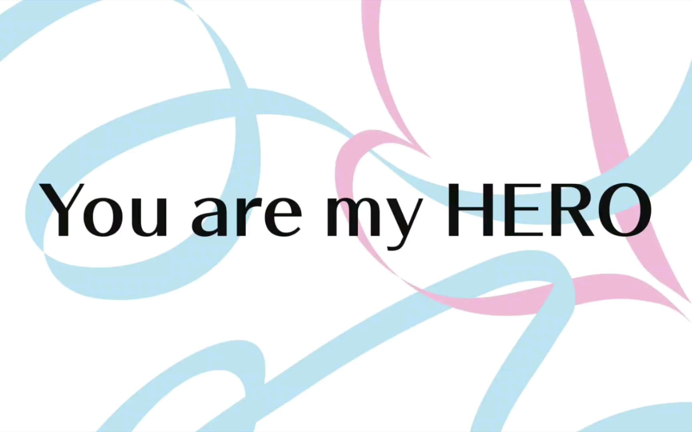
1. 母亲的伟大
做母亲的第一年，也是一场在我的修行！
我知道，母爱是本能的，但这并不意味着每一个人天生就会当母亲，都是在跌跌撞撞中成为一个 “不完美的妈妈”。在这一年中，我们获得很多欢乐，也在这一年里忍受带娃的艰辛。
从宝宝出生的那一天开始，往后每个月，都会遇到不一样的问题：第一个月可能会出现的黄疸，第二个月出现了肠胀气，三四个月时好不容易搞定了夜里的哭闹，六七个月时添加辅食后又开始便秘、腹泻，转眼到七八个月时又要开始教宝宝爬行了……
科学坐月子
生产后的头 28 天，是我们常说的新生儿期。在这个月里，你除了要学习大量的育儿技巧，生产后的疲劳、坐月子的辛苦、艰难的母乳喂养、产后心理的调整……都会是全新的挑战。
我们说的 “坐月子”，医学概念叫“产褥期护理”。产褥期是在宝宝出生后，妈妈的除了乳腺的全身器官恢复至孕前状态所需的时间，一般需要 6 周，也就是 42 天。
- 原则一：坐月子不等于坐着不动
- 在家里走路绕圈，反而更有助于身体恢复
- 如果你的身体吃得消，下楼走两圈也是完全可以的
- 原则二：坐月子期间更要注重个人清洁
- 坐月子的目的是使生孩子时造成的伤口愈合
- 注意用清水清洗会阴和乳头，以减少感染和患乳腺炎的风险
- 原则三：科学地吃才能更好地下奶
- 越早顺利下奶，实现母乳喂养就会越容易
- 鲫鱼汤这类补品浓稠且脂肪含量高，不但不能帮助下奶，反而容易堵奶
- 最好方法就是让宝宝吮吸母乳，增多吸吮次数，刺激泌乳素分泌乳汁
- 遵循食物多样、少油(
30g)少盐(6g)、少食多餐(七分饱)这三大饮食原则
- 原则四：室温以感到舒适为原则
- 室温 26~27℃ 最为合适
- 坐月子时最重要的就是周身的环境让刚生产完的妈妈们感到舒服
- 原则五：月子期间禁忌同房
- 无论是顺产还是剖宫产，产妇的身体都需要经历
6周左右的恢复期 - 需要注意的是在生娃的头
1～2年里，为了身体考虑，也要坚持避孕
- 无论是顺产还是剖宫产，产妇的身体都需要经历
从科学的角度来说，头胎之后一年半至两年再怀孕（孩子相隔两岁半到三岁），对妈妈及宝宝的健康最有好处。如果是 35 岁以上的高龄产妇，考虑到卵巢功能衰退可能会带来妊娠困难和妊娠并发症，间隔时间可适当缩短至一年。
产后抑郁
产后抑郁症和产后抑郁最大的区别就是：产后抑郁症达到了疾病的诊断标准，是病，得治；而产后抑郁是一种情绪、一种状态，不会持续很长时间，大多数人会在产后两到三周恢复常态。判断是否是抑郁症最直观的标准就是：如果你自己或者家人主观认为你的抑郁情绪已经影响了自己和周围人的日常生活，那就应当视其为抑郁症。
很多时候，家庭成员们往往更关注妈妈们的身体健康，比如奶水够不够、产褥期有没有被感染等，却忘记了妈妈们的心理健康同样重要。
- 心情不好
- 失眠或者睡眠过度
- 体重显著下降或者上升
- 疲劳乏力，做事倦怠
- 觉得任何事情都没有意义且时常陷入自责
- 思维能力下降或注意力涣散，精神恍惚
- 反复出现自杀的想法
- 对大多数活动，尤其是对自己曾感兴趣的活动明显缺乏兴趣
在产后抑郁症的症状中，最常见的是对大多数活动缺乏兴趣，感到悲伤、自责、内疚及绝望。甚至出现 “自己不想活了，对未来很绝望” 的想法。遇到这样的情况，抱怨、争吵和逃避无助于问题的解决，沟通和支持才是最重要的。
- 多陪伴，并关注陪伴的质量
- 对方烦的时候，不要去回应对方挑衅的语言
- 和妈妈一起学习关于孕育、亲密关系的知识
- 有必要时可向医生、心理咨询师求助
产后护理
每个妈妈都幻想着生完孩子后自己的身材马上恢复到孕前状态。可是好不容易 “卸货” 了，低头一看，肚子还是鼓鼓的。肚子鼓，并不一定是由于孕期吃胖的。这其实是因为子宫还没有回缩。如果把肚子看作一只气球，孕期慢慢膨胀，产后也需要慢慢回缩。坐月子妈妈的产后减肥计划：从饮食开始！
- 不喂母乳的妈妈减量吃
- 母乳喂养的妈妈正常吃
- 饿了才吃，每次少量，一日多餐
- 多吃新鲜蔬菜，适量吃新鲜水果
- 如果想喝汤，就多喝清淡的汤水
- 不暴饮暴食，不习惯性吃到撑，每餐只吃七分饱
最后，哺乳期吃太少是会严重影响奶水的质量和产量的。身体处于饥饿状态时的压力和疲倦感，会降低母乳的质量和产量，还很可能导致母乳中的脂肪和营养素偏低，这对妈妈和宝宝来说都不是一件好事。
妊娠和哺乳
预防妊娠纹的最有效方法是在孕期控制体重增长。涂抹任何预防性产品，比如橄榄油、维生素 E 或者一些护肤霜剂，效果都非常有限。如果已经长了妊娠纹，在产前三个月，你要做的就是严格控制体重增长，避免妊娠纹增多，同时选择成分简单的身体乳，坚持给身体做保湿，缓解瘙痒。
如果特别介意妊娠纹，可以在产后三个月以后，通过一些医疗美容项目来治疗妊娠纹，比如光子治疗、点阵激光治疗、果酸化学剥脱、浅表皮肤磨削术、微针美塑治疗、黄金微针等。
- 涨奶：频繁哺乳缓解肿胀，但不要排空
- 堵奶：频繁哺乳，同时“对症下药”
- 用湿毛巾轻轻摩擦奶泡，让它变薄或者脱落
- 如果有凸起的小白点，还可以试试用手指将它拉出来
- 在奶泡上涂抹橄榄油或羊脂膏，试一试软化白膜
- 乳腺炎：正常哺乳，缓解疼痛
- 得了乳腺炎也是可以哺乳的，而且得让宝宝多喝奶
- 否则奶水一直堵在乳房里，妈妈的病只会更严重
- 如果实在痛得不行，可以服用布洛芬和对乙酰氨基酚
- 如果宝宝不喜欢奶水的味道，也可以先用手挤掉一些奶水再哺乳
乳房下垂不是哺乳导致的，主要还是孕期激素水平的变化导致的。除此之外，吸烟、过度肥胖也会导致乳房下垂。也就是说，只要你怀孕了，就会造成产后乳房出现一定的下垂，这和是否哺乳没关系。要预防乳房下垂，还是得从孕期控制体重、产后养成良好的哺乳习惯、选择穿着松紧合适的哺乳文胸入手。
2. 第 0-1 个月
头一个月对于新手宝妈宝爸来说，算是磨合的一个月！
第一个月除了照顾宝宝之外，还需要特别关心和照顾妈妈，因为第一个月对于妈妈的产后恢复非常重要，包括身体上的（身材走形、腹部坠痛、各种炎症等）和心理上面的（产后抑郁、身体不适、心理恐惧等等），所以需要把更多的经历放在妈妈身上。这时候，请月嫂（更推荐）和住月子中心就比较有必要了，虽然花钱但是可以极大程度上面的缓解照顾宝宝的精力和时间。
生长发育
新生儿期是宝宝探索和认识世界的开始，虽然在大部分时间里除了吃就是睡，但他小小的身体依旧悄悄地发生着变化，只要在身长体重的标准范围，就不用太过担心。
除此以外，你可能还会从宝宝的外观上发现一些专属于新生儿的小特征，比如宝宝变成“小黄人”了，生下来屁股上就带着青斑，腮帮子上长“小突起”了，变成“小秃顶”了，等等。你甚至会发现“宝宝的乳房变大了”这样不可思议的事情。
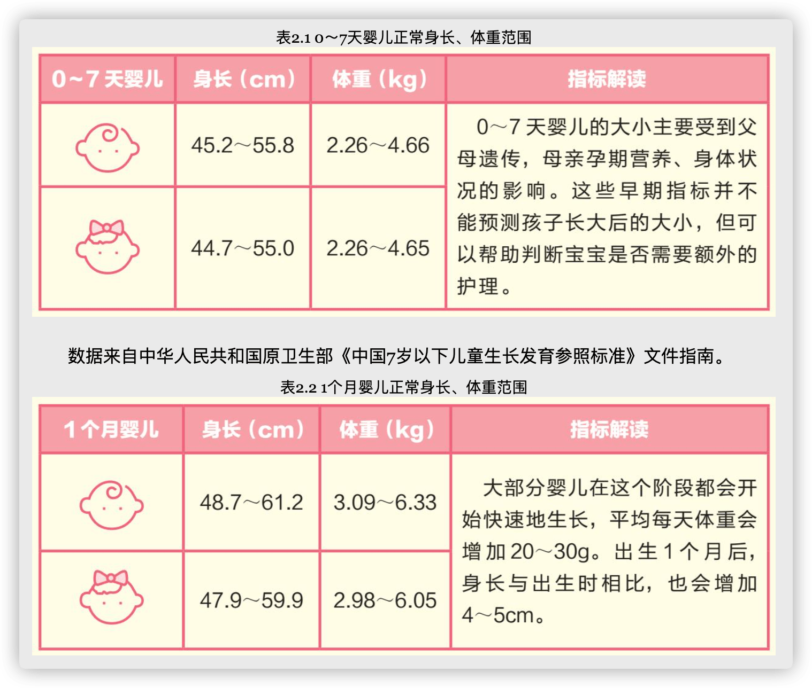
- 正常外观体征
- 胎脂
- 不需要特意清洗
- 蒙古斑
- 大多会在一岁之前逐渐消失
- 毳毛
- 会自然脱落的
- 马牙
- 一般会在数周后自然褪去
- 螳螂嘴
- 不需要特意处理
- 枕秃
- 不需要特意处理
- 胎脂
- 异常外观体征
- 有包块或阴囊肿胀
- 疝气 建议就医
- 哭闹时阴部会鼓出一个包，不哭时自然褪去
- 没有睾丸
- 泌尿外科就诊
- 单侧或双侧阴囊空虚的表现
- 有包块或阴囊肿胀
- 囟门肿胀或塌陷
- 宝宝颅骨发育中尚未完全合拢
- 如果哭闹时有肿胀或塌陷的情况(发烧/呕吐)，建议及时就医
- 新生儿黄疸
- 生理性黄疸 两周后自行消退
- 病理性黄疸 建议及时就医
宝宝的日常护理
抱娃并不是越久越好！抱多了，对妈妈和宝宝来说都会有一些潜在的问题。比如，宝宝可能过度依赖被抱着的感觉，等三个月之后，让宝宝独立睡觉就会难上加难，妈妈也会因半夜哄宝宝睡觉哄到“怀疑人生”。一直被抱着的话，宝宝四肢活动的机会少，所谓“用进废退”，也可能影响宝宝的体格发育。同时，有些妈妈抱娃姿势不正确，总是喜欢将宝宝抱在一侧，这样可能会造成宝宝习惯性斜颈或斜视，妈妈自己也容易腰酸背痛。
- 抱宝宝有哪些正确的姿势？
- 第 1 种：靠臂式抱法
- 第 2 种：靠肩式抱法
- 第 3 种：足球式抱法
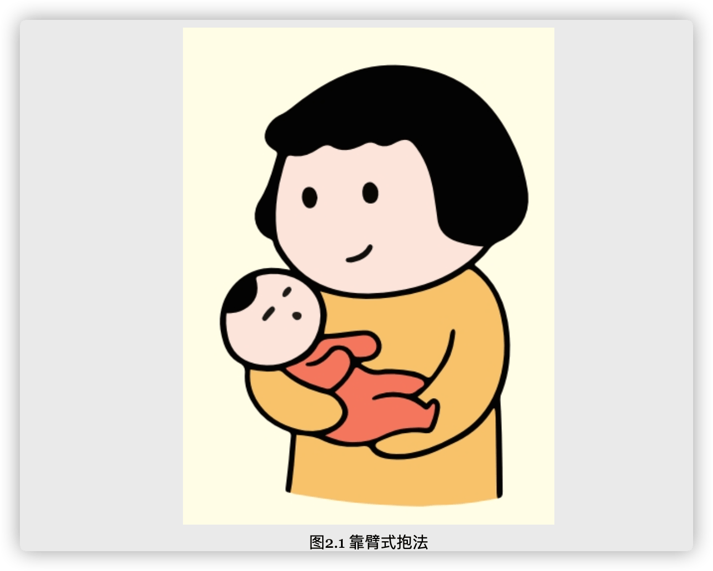
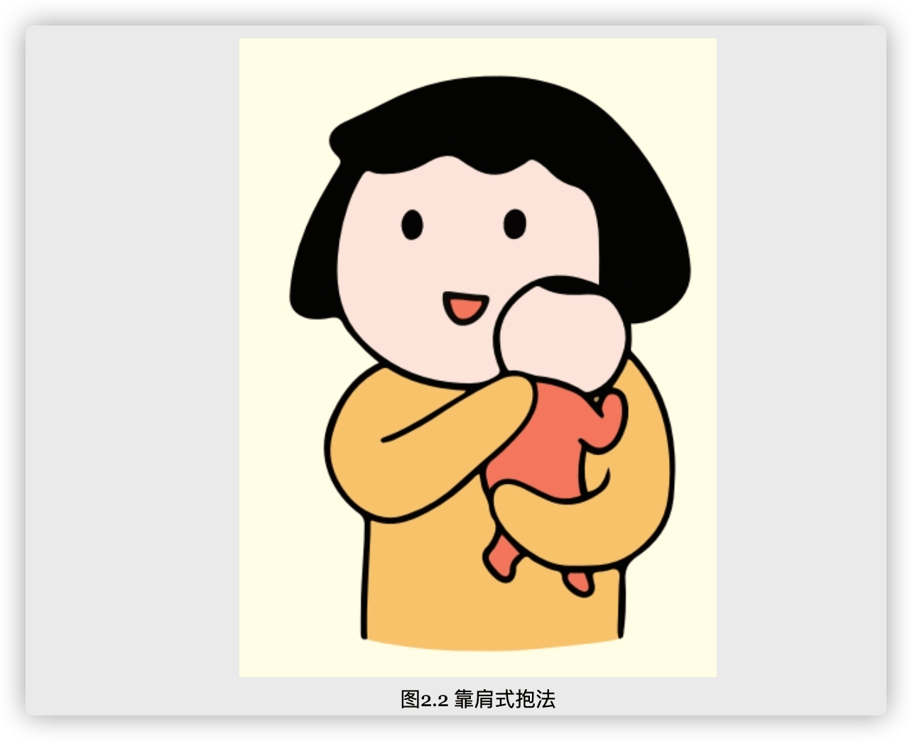
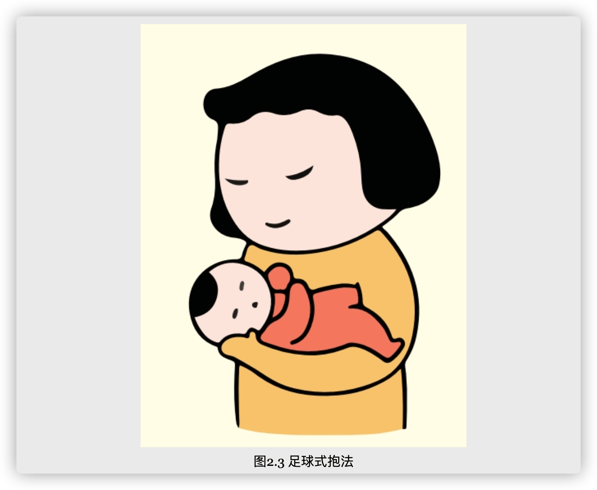
- 抱多久才合适？
0～3个月- 在这个阶段，可以适当多抱一会儿，时间长短不用严格控制
3～6个月- 在这个时间段，推荐你在喂养时抱着宝宝，喂养后将宝宝放到小床上
6个月后- 没有特殊情况的话，就不建议再增加抱宝宝的时间了
很多家长在给哭闹的宝宝喂奶时，看到宝宝拒绝吃奶，就直接不喂了，这其实是误会宝宝了。遇到这种情况，我们先要安抚好宝宝，比如竖抱起来走走，等宝宝平静下来，再重新尝试喂奶，一般来说，这时宝宝都会接受。
怎么解读宝宝的哭声
- 哭闹原因一：饿了
- 刚开始饿：转头、噘嘴巴、伸舌头、发出哼哼唧唧的声音
- 持续饿着：会“哇啊哇啊”地哭，响亮但没眼泪
- 饿得太久：哭得沙哑，脸蛋涨红、不肯喝奶
- 哭闹原因二：没有安全感
- 哭闹原因三：环境不舒服
- 太冷：宝宝不仅会哭，皮肤还会变冰凉，甚至变成紫蓝色
- 太热：宝宝除了哭，脖子上还会出汗
- 哭闹原因四：肠胀气
- 因肠胀气引起的哭闹，一般在宝宝吃完奶后出现
- 通常，宝宝的脸会涨红，全身使劲，两只脚蹬来蹬去，哭闹不止
- 哭闹原因五：肠绞痛
- 肠绞痛常会固定出现在傍晚或晚上，忽然大哭，声调很高
- 与此同时，宝宝的脸蛋会涨红，双手可能会握拳
- 宝宝的小肚子会微微鼓起来，有的宝宝还会蹬脚，身体扭来扭去
- 哭闹原因六：生病
- 哭声没有力气、眼神木木的、不肯吃奶
- 哭声洪亮、无法被安抚、不肯吃奶
- 哭声很尖、囟门突出、眼神木木的
- 哭闹原因一：饿了
怎么裹襁褓
- 菱形包裹法
- 睡袋包裹法
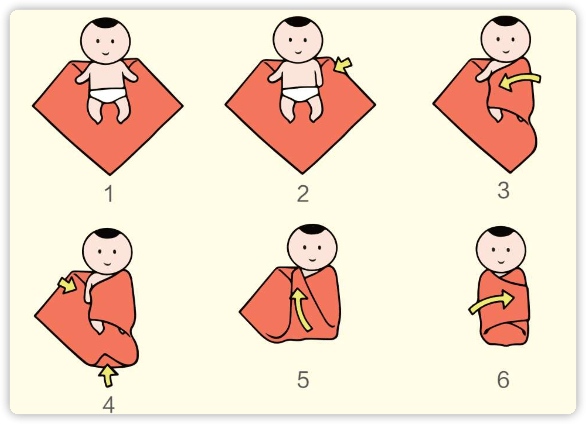
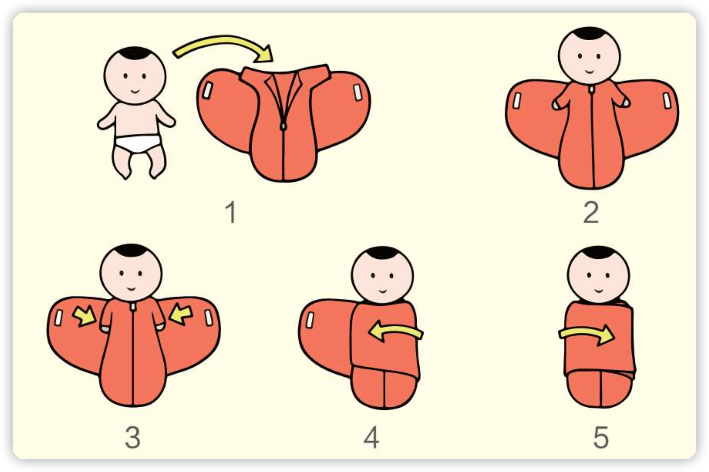
- 怎么做脐带护理
脐带是连接妈妈和宝宝的纽带，脐带的剪断，意味着宝宝作为一个独立的个体开始了自己的生命之旅。脐带刚被剪断时，宝宝身上会留下一段脐带残端。大部分宝宝的脐带残端会在出生 10～20 天自动干燥脱落。
- 在脐带脱落前为宝宝洗澡时，要避免打湿脐部，可多采用擦浴或使用防水贴。不慎沾水时，应立刻用干棉签擦干，保持脐带部位干燥。
- 给宝宝穿纸尿裤时，纸尿裤前端应置于肚脐以下，以免肚脐受到摩擦，沾到尿液，引起炎症。透气的环境也有益于肚脐的愈合和脐带脱落。
- 在正常情况下，脐带在脱落前会有少量液体分泌物，需要每天清洁。爸妈可以在宝宝洗澡后，用清洁的干棉签将脐部的水吸干，然后用酒精或碘伏消毒。消毒的时候注意不能仅停留在表面，要从脐带残端的根部开始消毒。
- 在给宝宝护理脐带前要清洁双手并擦干，防止污染宝宝的脐带伤口。
怎么给宝宝做日常清洁
- 给宝宝洗脸
- 控制好水温 | 水温控制在
34～36℃左右 - 注意清洁的力度 | 毛巾要用纯棉的，掉毛就不要用了
- 注意清洁的频率 | 每天洗
1～2次就可以
- 控制好水温 | 水温控制在
- 给宝宝洗头
- 防止小宝宝的头部患脂溢性皮炎(容易)，也就是乳痂一类的东西
- 给宝宝洗头的频率，每天洗一次或是每隔一天洗一次，都是可以的
- 大多数时候，洗头只用清水洗洗就好，有明显分泌物在用洗发液
- 给宝宝洗澡
- 控制好水温 | 水温在
34～36℃(一个月上) | 水温在37～38℃(未满月) - 注意清洁的频率 | 每天或隔天洗澡 | 洗澡之后记得抹保湿霜
- 胎脂的清洁 | 可以适当使用沐浴露
- 控制好水温 | 水温在
- 给宝宝洗脸
怎么观察宝宝的排泄物
- 正常颜色
- 黑色
- 宝宝出生后的第一次大便一般都是黑黑的，像柏油一样
- 这是因为其中包括了羊水、黏液、脱落的细胞等
- 墨绿色
- 当宝宝开始喝母乳后，“便便”会逐渐变成墨绿色
- 黄色
- 出生
5天后，喝母乳的宝宝开始排稀便或粗颗粒状黄色或略带绿色的“便便”
- 出生
- 淡黄色或灰黄色
- 喝配方奶的宝宝的“便便”一般为淡黄色，呈糊状
- 黑色
- 异常颜色
- 白色或灰色
- 可能被细菌感染或者有胆道疾病。
- 黑色
- 可能是消化道出血
- 鲜血
- 消化道活动性出血或是来自大肠、直肠的出血
- 绿色带黏液
- 可能存在病毒感染
- 白色或灰色
- 正常颜色
喂奶的正确姿势
回想一下，你在给宝宝喂母乳的过程中，有没有遇到过乳头疼痛、乳头长小泡、患乳腺炎等情况。如果你遇到过这些情况，那你就要关注一下你的哺乳姿势了。不过，虽然哺乳姿势很重要，但是其实并不存在什么特定且完美的哺乳姿势。只要你和宝宝都感到舒适，宝宝能够吃到足够的奶，那就是适合你们母子最独特的完美姿势。
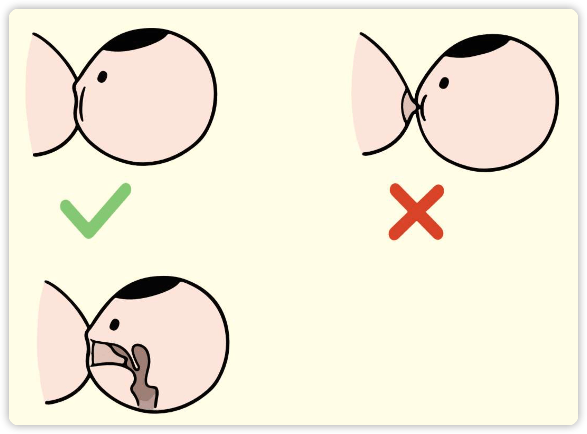
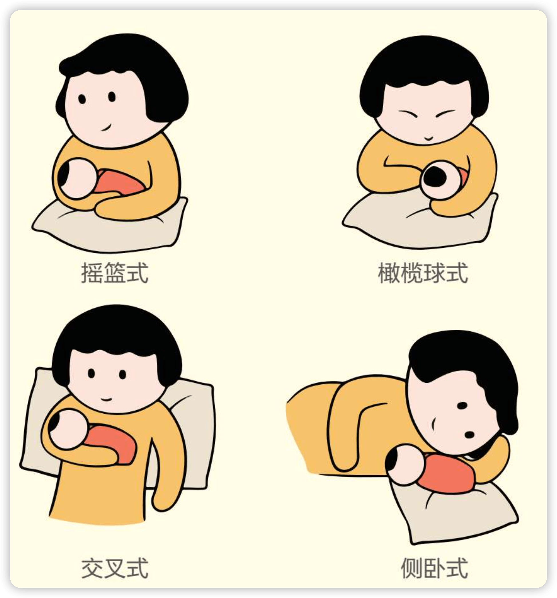
- 配方奶的选择
- 主要营养素
- 蛋白质、脂肪（亚油酸、α-亚麻酸等）、碳水化合物
- 维生素 A、维生素 B、维生素 C、维生素 D、维生素 E、叶酸等
- 矿物质及人体必需的微量元素（钠、钾、钙、铁、锌、硒、镁、碘等）
- 可选添加成分
- DHA（二十二碳六烯酸）、AA（花生四烯酸）、胆碱、肌醇、核苷酸、牛磺酸等
- 配方奶分段
- 一段奶粉适用于
0～6月龄 - 二段奶粉适用于
6～12月龄 - 三段奶粉适用于
12～36月龄 - 四段奶粉适用于
36～72月龄
- 一段奶粉适用于
- 主要营养素
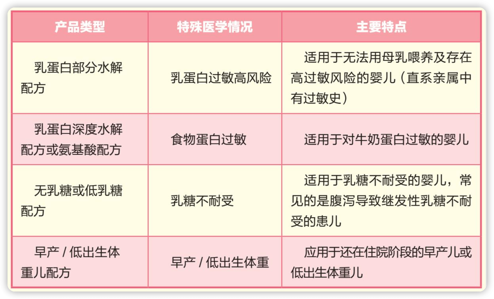
母乳是婴儿最好的食物，但因为种种原因，总有许多母亲无法实现纯母乳喂养。配方奶就是在你的母乳供给不足时，作为补充喂养的一种选择。
- 配方奶喂养误区
- 误区一：先加奶粉后加水
- 无法掌握水量，导致冲调比例不对
- 容易产生小结块，导致奶液不均匀，影响宝宝吸收
- 正确做法：先取定量的温水，再加入对应量的奶粉，慢慢拌匀
- 误区二：用烧开的水冲泡奶粉
- 温度过高的水会影响配方奶粉中维生素的活性
- 有些奶粉添加了益生菌，而开水会导致这些成分失效
- 正确做法：一般来说，配方奶粉的适宜冲泡温度是
40～60℃之间
- 误区三：随意改变水和奶粉的比例
- 水加得太多，宝宝吃同样多的奶，却无法获得足够的营养
- 水加得太少，奶就会很浓稠，宝宝吃下去往往无法消化，甚至会腹泻或便秘
- 正确做法：一般标注形式是
XXX毫升水加XXX勺奶粉
- 误区四：大力摇晃奶瓶后就给宝宝喝
- 大力摇晃奶瓶后会产生过多气泡，马上给宝宝喝，会导致吐奶、胀气，从而影响消化
- 正确做法：用平缓的动作来转动奶瓶，并观察奶粉的溶解情况
- 误区五：提前冲好或多余的奶不能放进冰箱
- 如果你提前冲好奶粉或有多余的奶，实际上是能保存在冰箱里的
- 相反，不要泡完后一直放在温奶器上，因为这样容易使奶滋生病菌
- 正确做法：提前冲好的奶被放置在室温环境下不能超过
1小时
- 误区六：用牛奶替代配方奶粉
- 牛奶会增加
1岁以下宝宝的肾脏负担，甚至导致肠道疾病 - 正确做法：在宝宝
1岁之前不要给他喝牛奶。1岁以后宝宝才可以喝牛奶或其他全脂奶
- 牛奶会增加
- 误区一：先加奶粉后加水
3. 第 1-3 月龄
开始要慢慢学会如何照顾宝宝！
这个时候，月嫂也基本都已经离职了，照顾宝宝的责任就需要放到自己身上了。同时，这个阶段妈妈也基本可以正常料理自己的起居，并且可以适当的抱抱孩子了。这个时候，就需要即时调整睡眠时间和喂养的量度，最好是让抱抱可以睡整觉。
1～3 月龄的宝宝，已经是一个活泼又机灵的小家伙了。他逐渐有了吃、活动、睡觉等有规律的生活，也变得喜欢和人接触，白天醒着的时间也越来越长。同时，由于胃容量的增加，宝宝晚上吃奶的次数会逐渐减少，出生 3 个月左右，部分宝宝就能睡满一整夜，妈妈也可以睡个好觉了。
- 可以开始运动，逐渐把体重控制回孕前的状态。
- 和宝宝积极地互动，增加宝宝的安全感。
- 开始培养宝宝规律的睡眠习惯。
在现实生活中，不少人就是遇到了生完孩子后总是腰酸背痛、眼睛干涩、掉头发等情况，于是便觉得是自己的月子没坐好，其实并非如此，“月子病” 更多的是 “心病”！
- 产后脱发
- 这种休止期脱发一般会在产后
15个月内逐渐好转
- 这种休止期脱发一般会在产后
- 腰痛
- 正常的生理变化，比如子宫增大导致前移，自然缓解
- 异常的病理现象，腰肌劳损、子宫病变等，需要需求医生帮助
- 眼睛干涩
- 正常的产后生理变化，是会随着身体的恢复而逐渐改善
这个时候，在关注宝宝的同时还需要注意产妇的健康，比如盆底肌修复(告别漏尿烦恼)、腹直肌分离检查(不建议使用束缚带)等问题。
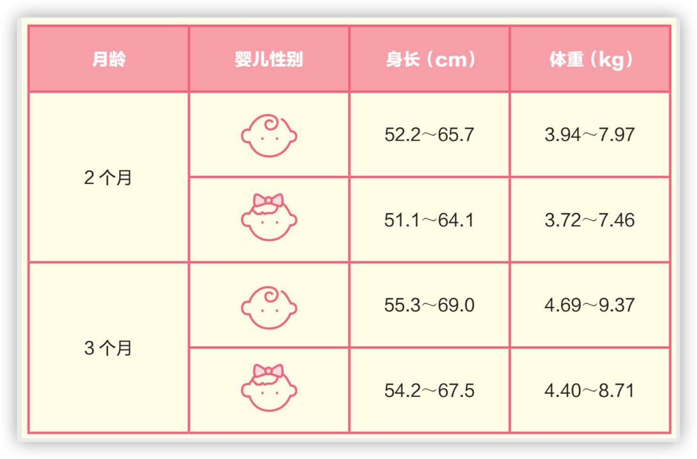
- 阴唇粘连
宝宝 3 个月大时，有的宝爸宝妈可能会发现自家女宝宝的大小阴唇或小阴唇粘连到一块儿了。这种现象还不算少见。在 3 个月到 6 岁的女童中，至少有 12% 的女童身上曾经存在阴唇粘连的现象。
许多宝宝到了 6～18 个月大时，阴唇会自行分开，也有到 6～7 岁还没分开的。但基本上到了青春期前后，雌激素水平上升，阴唇自然就分开了。
身体发生阴唇粘连的宝宝们，多数没什么不好的症状，只要注意经常清洗，保持会阴部清洁，就不用做其他任何处理。但如果宝宝感到不舒服，或频繁出现泌尿系统感染的症状，就应该及时就医。国内一般首选分离阴唇手术，如果你在意这是有创的，也可以考虑给宝宝外用雌激素软膏。
- 宝宝拥有的能力
- 动作能力
- 左右转头、抬头、支撑身体
- 协助宝宝进行翻身、爬行、支撑动作
- 环境适应能力
- 追视、笑出声音
- 可以抚摸宝宝、挠痒痒等
- 社交能力
- 社交性微笑
- 婴儿操、手指游戏、语言游戏
- 动作能力
- 和宝宝互动的注意事项
- 捏鼻梁和捏脸蛋
- 如果动作粗暴，有可能会损伤宝宝的皮肤，甚至肌肉、神经
- 荡秋千和抛高高
- 一旦失误，后果不堪设想
- 玩宝宝的生殖器
- 心理发展没有好处，同时也存在感染疾病的风险
- 捏鼻梁和捏脸蛋
养出好看的头型
- 多趴着玩
- 多抱宝宝
- 变换头部的位置
- 不要定型枕也不要趴着睡
O形腿、X形腿和腿纹不对称2岁之前的孩子，基本都是O形腿8岁之前的孩子，有O形腿或者X形腿都是发育的正常现象- 但是如果你发现宝宝的腿纹不齐，就要重视了(髋关节发育)
没有出牙，也要做好口腔清洁
1～3月龄还没有出牙，可用干净的纱布或用棉球蘸水，擦拭宝宝的口腔黏膜- 定期对宝宝的玩具、餐具、寝具做清洁、消毒
宝宝冬天穿衣的原则
- 孩子的新陈代谢要比大人快，但不是说孩子就一定要穿得比大人少
- 只要环境温度低于人体感到舒适的
24～26℃，就有必要多穿一点儿 - 判断
1岁以内的宝宝冷不冷，最简单的方法就是摸一摸宝宝的后背 - 因为宝宝的末梢神经发育不完全，手脚冰冷是很正常的
- 只要宝宝的后背温暖，不发烫、不出汗，就说明穿得刚刚好
- 不到
1个月大的宝宝，正常情况下，应该比成人多穿一件普通的单衣 1～12月龄的宝宝的体温调节能力基本和大人一样了，可以参照大人一样穿衣
- 喂养
- 吃奶多“猛涨期”来了
- 夜奶，当断则断(
4月龄左右)- 影响宝宝的睡眠
- 影响妈妈的睡眠
- 为了更好地哺乳
- 夜奶应该怎么断？
- 逐渐减少夜奶次数
- 睡前填饱小肚子
- 建立固定的“睡前仪式”
- 避免过度疲劳
- 给宝宝尝试自己入睡的机会
- 关注睡眠周期，安抚协助
- 允许偶尔的反复
- 厌奶(通常集中在
3～8月龄)- 第一，宝宝吃奶时容易被其他事物吸引，导致厌奶
- 第二，宝宝每天的消耗不够，不愿意吃奶
- 第三，添加辅食后，乳汁摄入量下降
- 第四，生病引起不适，导致宝宝不愿意喝奶
- “厌奶”是宝宝成长过程中的一种生理性反应，是很正常的
- 睡眠
0～1月龄 睡觉补充身体1～3月龄的宝宝 最大的任务依旧是培养宝宝规律的睡眠 “吃玩睡”策略4～8周宝宝- 常见的肠绞痛、肠胀气的问题
- 大部分宝宝晚上喝夜奶的次数都在
2～3次 - 吃奶时间可以按照每次间隔
3～3.5个小时来安排 - 白天小睡规律：清醒一个小时左右就会出现睡眠信号，就要立即安排小睡
- 无论宝宝白天可以睡多长，超过
3个小时都要叫醒他，防止日夜颠倒的问题
8～12周宝宝- 大部分宝宝会在
3～4个月大时形成独特的作息规律 - 白天的清醒时间从
1个小时延长到1.5个小时，总体的睡眠量为13~16个小时 - 从 8 周开始，很多宝宝的夜晚第一觉开始能睡到
6~8个小时了 - 夜奶次数也从之前的 2~3 次减少到
1～2次 - 这个时候一定要坚持“吃玩睡”策略，定时睡眠习惯的关键
- 喂奶间隔可以拉长至
3.5～4个小时，从而使 “吃玩睡” 的循环变成4个小时 - 白天依然是如果小睡超过
3个小时，就温柔唤醒 - 在清醒时间可以安排外出，一天
1～2次外出，每次1个小时左右
- 大部分宝宝会在
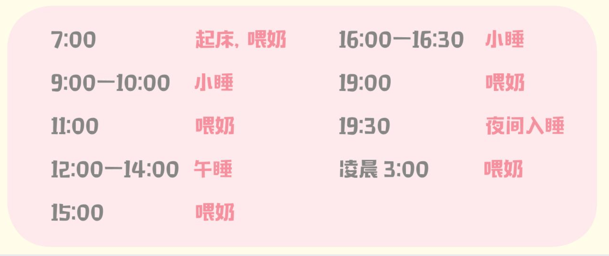
4. 第 4~7 月龄
多拍一些宝宝的照片和视频，以后都是美丽的回忆！
4~7 月龄的宝宝 对父母和宝宝来说都是非常美好的时期
- 开始会翻身、坐、爬，视觉、听觉越来越敏锐
- 还会对事物表现出喜欢或讨厌的小情绪，性格正在慢慢展现
- 这是养成宝宝睡眠习惯的黄金期，要积极引导孩子自己入睡
- 处于这个阶段的宝宝长牙和加辅食，可能会让你经受不小的折磨
- 妈妈准备好
全职带孩子？还是选择回归职场？究竟哪一种选择更好？其实，不管是哪种选择，都有要面临的“得”与“失”，没有完美的选择。不论怎么选择，妈妈们如果能够比较清晰地知道自己做出选择后要面临些什么，那么将会更容易适应人生的新阶段。
- 挑选合适的照顾人
- 最好能挑选性格温和、耐心仔细的照看者
- 计划出一定数量的具有良性刺激的活动，并乐于接受科学的育儿观念
- 给宝宝高质量的陪伴
- 和宝宝一起吃饭
- 宝宝学会一项技能的时候
- 让宝宝在睡前和起床后能第一时间看到你
不论你现在的选择是回去工作还是回归家庭，只要经过审慎的考虑，它们都会是很好的选择。万一后来发现已经做出的选择其实没那么好，你也可以随时改变计划。
生活的每一天都不能重来，但是好在我们可以随时调整步伐、调整节奏。所以，请妈妈们不要焦虑，不要无助。没有完美的选择，也没有尽如人意的生活。每个母亲都会面临类似的情况，你只要把能做的事情做好，把想做的事情做好，相信自己，喜欢自己。
- 生长发育
- 基本特征：长第一颗牙，能坐着就不躺着
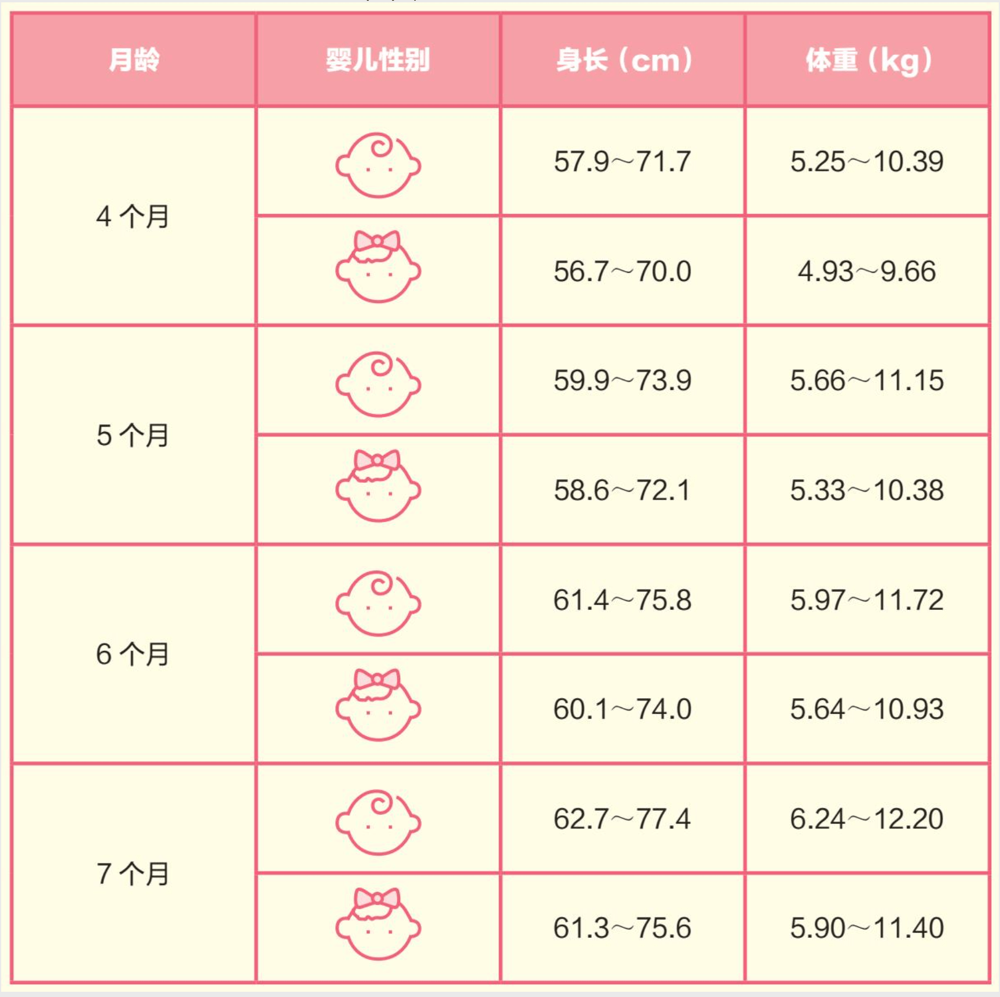
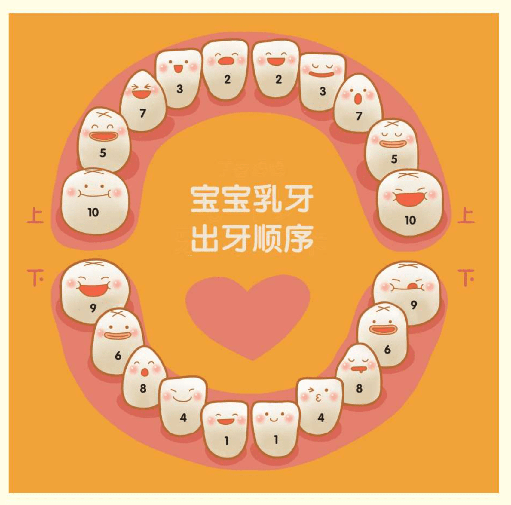
- 宝宝拥有的能力
- 大运动能力
- 五月份开始独坐，七月份可以坐稳了
- 精细运动能力
- 四月份可以伸手够东西，六月份可以抓牢玩具
- 视觉及听觉能力
- 坚持每天给孩子看黑白和彩色卡片；六月份可以辨别声音的能力
- 言语能力
- 咿咿呀呀，偶尔发出哒哒、妈妈之类的简单音节
- 社会适应能力
- 理解大人的表情里面对应的指令
- 大运动能力
- 宝宝能力的培养
- 腰背训练游戏
- 翻滚强身游戏
- 积木对击游戏
- 鬼脸嘟嘟游戏
- 大量言语游戏(变成话痨；促进宝宝的语言表达能力)
- 给宝宝选择玩具
- 礼物一：简单的彩色积木
- 礼物二：小球
- 礼物三：布书及绘本
- 日常护理
- 宝宝口水泛滥的原因
- 尤其是
4~6个月大、处于出牙期、吸吮手指的宝宝，口水就像开了闸 - 宝宝流口水是很正常的生理现象，等孩子长到
2~3岁时会逐渐消失
- 尤其是
- 宝宝流口水该如何护理
- 勤给宝宝剪指甲
- 保持面部及衣物清洁
- 不要捏宝宝的脸颊
- 哪些情况需要引起重视
- 脑瘫或先天性痴呆
- 口腔溃疡
- 呼吸系统感染
- 帮宝宝缓解长牙不舒服
- 摩擦牙龈(用手指或干净湿润的毛巾摩擦宝宝的牙龈)
- 准备一个咬环(不推荐充满液体的或者冰冻的咬环)
- 及时擦口水(多准备一些口水巾；直接买
20条就行) - 避免使用直接接触牙龈的药物(尽量避免使用药物)
- 防止蛀牙从现在开始
- 从长第一颗牙开始刷牙
- 避免喝果汁及含糖饮料
- 避免宝宝抱着奶瓶睡觉
- 宝宝口水泛滥的原因
喂养
- 科学背奶攻略
- 产假结束前的准备工作
- 让宝宝适应奶嘴：上班前两周左右开始用奶瓶喂奶
- 调整作息并练习挤奶：上班前两周左右宝宝和妈妈开始调整作息
- 预备适合的吸奶器：要选择质量好、材料安全、适合乳房的吸奶器
- 职场妈妈的挤奶攻略
- 挤奶环境适宜：尽量选择温暖、安静、隐秘的空间挤奶
- 挤奶时间和频率：一般为每
2~3个小时吸一次，每侧吸15~20分钟 - 巧用道具：使用容量够大设计省力的妈咪包，时尚大方又好用的外出哺乳衣
- 职场沟通：建议妈妈适当运用自己的哺乳假，保护自己的合法权益
- 产假结束前的准备工作
- 科学背奶攻略
喂养
- 母乳如何储存和保鲜
- 直接让宝宝喝
- 室温
25~37℃时，可以存放4个小时 - 室温
15~24℃时，可以存放8个小时 - 室温
<15℃时，可以存放24个小时 - 乳汁不能被储存在超过
37℃的环境里
- 室温
- 放进冰箱冷藏
- 冷藏温度在
2~4℃，可以储存6~8天
- 冷藏温度在
- 放进冰箱冷冻
- 在单门冰箱的冷冻室中，可以储存
2周 - 在双门冰箱的独立开门的冷冻室，可以储存
3个月 - 在恒温冰柜中（
-20℃），可以储存6个月
- 在单门冰箱的冷冻室中，可以储存
- 直接让宝宝喝
- 母乳如何储存和保鲜
相对于室温保存的乳汁，冷藏或是冷冻过的乳汁会少一点儿营养成分，但即使是这样，也比奶粉有营养得多。所以妈妈们完全没有必要因为自己的乳汁被冷藏或是冷冻过了，就盲目地给宝宝添加奶粉。
解冻母乳最安全的方式是将其在冷藏室里放一夜，或是拿着容器放在流动水中冲，并逐渐提高水温，将其加热到舒适的饮用温度。这里还要特别提醒一点：解冻过的母乳不能再次冷冻！
- 喂养
- 辅食添加的顺序和禁忌
- 能做到稳定地抬头，控制身子运动，扶着坐及用勺进食后，可尝试添加辅食
- 需要注意的是，未满
4个月是一定不能添加辅食的，切记
- 辅食应该怎么加
- 从一到多
- 每次只添加一种新食物，连续吃
2~3天 - 如果宝宝没有出现不适，再添一种新食物
- 每次只添加一种新食物，连续吃
- 由稀到稠、由细到粗
- 不用咀嚼、方便消化的泥状，比如打得碎碎的肉泥
- 需要咀嚼、吞咽的半固体状，比如剁得碎碎的肉末
- 需要仔细咀嚼的固体状，比如小颗粒的肉末
- 由少到多
- 第一天，可以尝试
1~2次，往后可以增加进食量或次数 - 这样观察
2~3天，宝宝适应了，就可以再尝试新食物
- 第一天，可以尝试
- 从一到多
- 好的辅食应该是怎样的
- 营养密度高
- 能提供充分的能量、优质的蛋白质和丰富的微量元素
- 特别是要添加富含铁元素的食物，比如强化铁米粉、红肉泥、鸡蛋等
- 易清洗，易准备
- 好的辅食，准备起来一定很方便，也很卫生
- 容易吃，好消化
- 食物除了本身要有足够的营养，也要容易吃下去
- 不含骨头，不坚硬
- 太硬、太小的颗粒物容易呛到宝宝或卡在他的喉咙里
- 吃鱼、坚果、水果块也不适合给
1岁以内的宝宝吃
- 口感天然，口味清淡
- 宝宝的味觉很灵敏，食物应该以天然的口感为主
- 营养密度高
- 辅食应该吃什么呢
6月龄- 辅食关键词：糊泥状食物，比如米糊、菜泥、果泥、肉泥等
- 建议优先添加富含铁的食物，比如强化铁米粉、红肉泥等
- 主食依然是母乳或配方奶，辅食主要是让宝宝的食物逐步多样化
- 量不需要太多，每天可以喂
1~2次辅食，一次喂1~2勺
7月龄- 辅食关键词：菜泥、果泥、肉泥
- 每天保持
600ml奶量，每天喝4~6次奶，吃1次辅食 - 优先添加富铁食物，比如强化铁米粉、红肉泥等
- 选择强化铁米粉可以用母乳、配方奶或水冲调成稍稀的泥糊状
- 能用小勺舀起但不会很快滴落，毕竟无论米粉是太稀还是太稠对宝宝都不是很好
- 吃菜泥和果泥：南瓜、土豆、山药、西蓝花、苹果、香蕉等食物做都是好选择
8~9月龄- 辅食关键词：末状食物
- 每天保证母乳/配方奶
600ml，喝奶4~6次，吃辅食2~3次 - 从富铁食物开始，逐渐达到每天
1个蛋黄或全蛋和50g肉禽鱼 - 其他谷物、蔬菜、水果视情况添加
- 若婴儿对蛋黄/鸡蛋过敏，在回避鸡蛋的同时应增加肉类
30g
10~12月龄- 辅食关键词：碎状、丁块状、“手指食物”
- 保证母乳/配方奶
600ml，每天喝奶3~4次，吃辅食2~3次 - 可以将食物切成块状，煮的时候也要注意时间久一点儿
- 每天仍然保持吃
1个鸡蛋，肉禽鱼50g，适量谷物，增加蔬菜、水果种类 - 宝宝吃辅食的时间尽量跟大人三餐同步，两餐之间可以各加一顿点心
- 注意事项
1岁以内的宝宝不要吃盐，包括盐、海盐、儿童酱油- 不要在宝宝的食物中加糖，早期加糖会增加宝宝患龋齿的风险
1岁以内的宝宝不要吃蜂蜜，蜂蜜可能含有肉毒杆菌毒素- 别急着给宝宝吃整颗坚果，容易发生呛咳，严重时还会造成窒息
- 不要给宝宝喝果汁，不利于牙齿保护，损失了原来有助于消化的膳食纤维
- 米汤营养及能量密度很低，不仅会占据孩子有限的胃容量，影响其他营养素的吸收
- 建议在宝宝
3岁后再考虑食用成人食物，但烹调上还是要尽量少盐控油
- 辅食添加的顺序和禁忌
- 睡眠
- 睡眠特征：向成人睡眠模式转变
- 4 月份开始，慢慢昼夜规律，晚上通常可以一次睡足
4~5个小时 - 宝宝的睡眠模式明显向成人模式转换，每日睡眠总量为
14~15个小时 - 白天通常小睡
3次，共3~5个小时，每次清醒2~2.5个小时 - 宝宝在
4个月左右会出现睡眠倒退期，表现为频繁夜醒、早醒、小睡变短 - 夜奶次数减少至
1~2次
- 4 月份开始，慢慢昼夜规律，晚上通常可以一次睡足
- 严格为宝宝建立固定的作息表
- 固定的睡前活动
- 提供舒适的睡眠环境
- 帮助宝宝分辨昼夜
- 临睡前别让宝宝太兴奋
- 睡眠特征：向成人睡眠模式转变
5. 第 8~12 月龄
抓住宝宝，最好玩、最有意思的时候！
进入 8~12 个月，你的身材在你的控制下也开始恢复，生产导致的妊娠纹、色素沉淀也随着时间褪去。但你在享受着宝宝带给你的快乐的同时，可能还会有些苦恼，每天围着宝宝转，似乎没有了自己的生活？
- 在照顾宝宝的同时，要关注自己的成长，做一个快乐的妈妈。
- 积极帮助宝宝从爬过渡到走，增强孩子的运动能力。
- 随着孩子的行动力增强，关注安全问题。
每一个女人在成为妈妈之前，都曾幻想着，如果生个女儿，那就是多了一个贴心闺蜜；如果生个儿子，就是多了一个护花使者。想来想去，都觉得未来的日子美极了！然而，在生完孩子的头一年内，太多妈妈却发出了这样的心声：生完孩子，才知道生活有多糟糕。
做一个快乐的妈妈
- 法则一：弱化当妈后的委屈心理，摆正当妈的心态
- 孩子是你自愿生的，还是有人逼你生的？
- 因为孩子，你是不是得到了很多从未有过的幸福感和快乐？
- 如果有后悔药，你愿意把孩子塞回肚子里吗？
- 法则二：当妈后，你要相信自己变得更棒了！
- 你有那么大的能量，你可以遇见更好的自己
- 法则三：给自己处理坏情绪的时间
- 约闺蜜喝下午茶，顺带吐槽
- 给自己放假半天，出门购物
- 把孩子交给长辈，和老公来一场约会
- 法则四：学会放手，相信爸爸也能带娃
- 一个不快乐的母亲，很难养育出快乐的孩子
- 法则一：弱化当妈后的委屈心理，摆正当妈的心态
很忙的爸爸也能成为一个好爸爸
- 父亲效能《父亲在儿童健康发展过程中的重要性》
- 父亲效能指的是，你的物质与精神到底能给你的孩子带来多少正面的影响
- 1.提供情感陪伴
- 2.塑造积极形象
- 3.带给孩子良好的情绪感受
既然出来玩，那就好好玩，偶尔带一次娃，就别借着玩的名义趁机教训孩子了。好苗不愁长，别功利地盯着怎么培养和提高孩子，大家真正高兴起来，才能让孩子把爸爸与当下的欢乐联系起来，从而建立良好的亲子关系。
- 生长发育
- 男宝宝阴茎勃起，女宝宝阴蒂勃起
- 贫血筛查，看起来健康也要做，即需要定期去医院检查
- 变化一：这个阶段的宝宝可以识别全人类语言的所有音素
- 变化二：开始用肢体和表情来表达自己的需求
- 变化三：开始说一些单词和叠词，并把说的话和事物联系起来
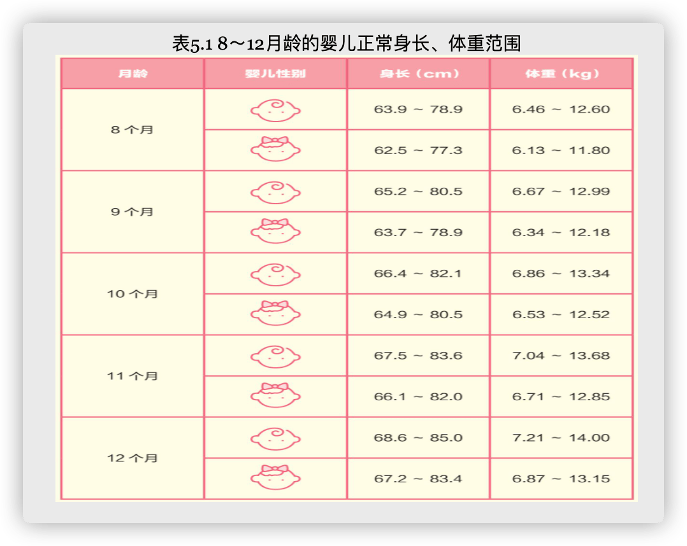
- 感知能力：显露社交属性，安全感的建立期
- 视觉
- 捉迷藏
- 照镜子游戏
- 听觉
- 可以采用不同的语调，尽量让句子变得有节奏感
- 以后只要有了适当的环境，他学这门外语的效果就会更好
- 针对这些特点，爸爸妈妈可以跟宝宝玩一个动物手指偶的游戏
- 社交
- 你会发现，孩子变得比之前更怕生了
- 等宝宝接近
12个月大的时候，他的社交发展又会迎来一个里程碑事件 - 他会因为你笑而继续逗乐你，也会因为你生气而做出害怕或者哭闹的反应
- 让宝宝更加大胆、更加自信：”妈妈鼓励我这样做”，“我这样做很安全”
- 视觉
- 运动能力：从爬行到学步，正确引导动作要点
- 爬行
- 在宝宝差一点儿就可以够到的地方放一些有趣的玩具，吸引他往前爬
- 等宝宝爬到终点后，赞扬宝宝“你爬得真好”，都会让宝宝更喜欢爬行
- 站立
- 一不小心就直接过渡到了可以扶着站起来的阶段
- 对周围的好奇心会推动着宝宝抓住一切机会自己站起来
- 行走
- 阶段一：站立掌握平衡
- 阶段二：“巡航”
- 阶段三：独站
- 阶段四：独走
- 爬行
- 语言发展：开发第二外语的好时机
- 在我们看不见的宝宝的小脑袋里，他的语言认知能力正发生着翻天覆地的变化
- 注意事项
- 刚开始学步的宝宝可以不用穿鞋、穿袜让器感受身体的重力以及接触的感觉
- 更利于孩子的感受、学习、协调和平衡
- 外出时可以选择软底、软面、透气性好、鞋底有防滑设计的步前鞋
- 让宝宝的脚趾能够抓地，这有助于足底神经发育，能帮他更好地站稳和学走步
- 日常护理
- 宝宝可以用枕头吗
- 枕头不要用得太早
- 多大的宝宝可以用枕头
1岁以内的宝宝最好不要用枕头，会增加婴儿猝死综合征的风险1岁以上的宝宝可以开始使用枕头，要根据宝宝的发育状况及时更换枕头
- 给宝宝选择有“操控感”的玩具
- 礼物一：皮球
- 礼物二：画板、画笔
- 礼物三：下蛋小黄鸭
- 礼物四：色彩明亮、图画内容简单的各种绘本和布书
- 礼物五：简单的方块积木
- 礼物六：套圈或套塔
- 父母才是孩子最好的“玩具”
- 宝宝可以用枕头吗
- 喂养
- 断奶的时机选择很重要
- 建议，宝宝头
6个月只进行母乳喂养，然后母乳搭配固体食物喂养到至少1岁 - 通常在出生
6个月以后，宝宝会开始接触固体食物，这可能会促使宝宝断奶 - 有些宝宝
1岁左右才愿意吃其他东西，这时宝宝通常可以吃很多种类的固定食品了 - 有些宝宝直到蹒跚学步时才愿意断奶，因为此时他们不想一直坐着喝母乳了
- 建议，宝宝头
- 哪些情况下不适合断奶？
- 担心宝宝过敏
- 宝宝不舒服
- 家里有重要变动
- 断奶方式和禁忌
- 循序渐进
- 选对喂奶时间点
- 选择母乳替代品
- 断奶后需要注意什么
- 只需要给乳房
1~2年的正常恢复期即可 - 在这期间，你唯一需要花钱做的就是定期体检
- 只需要给乳房
- 断奶后，妈妈饮食要控制
- 开始添加“手指食物”
- 任何可以用手拿起来吃的食物都可以叫作“手指食物”
- 可以是条状、块状、颗粒状，也可以是蔬菜、水果、面食、肉类
- “手指食物”有哪些好处？
- 让宝宝学吃饭
- 锻炼咀嚼能力
- 刚添加辅食
- 怎么选择“手指食物”
- 一阶段（
7~8月龄）- 此时适合吃好抓、软烂、方便吞咽的食物
- 1）软质水果：牛油果、香蕉片等
- 2）蒸软的蔬菜：南瓜条、土豆条、冬瓜条、山药条等
- 二阶段（
9~10月龄）- 这时，可以给宝宝吃一些稍有嚼劲，也更适合运用手指的颗粒状、块状的食物
- 1）软质水果：苹果片/块（觉得太硬可以煮熟）、杧果块、熟桃肉块、熟草莓等
- 2）蒸熟的蔬菜：胡萝卜块、莴笋块、香菇块等
- 3）熟的其他食物：鸡蛋块、三文鱼块、馒头片、面包片、豆腐干等
- 4）市售“手指食物”：磨牙饼干、泡芙、小溶豆等
- 在选择时，注意选择低糖或无糖的食物
- 三阶段（
11~12月龄）- 可以考虑挑战比较难嚼的肉类和混合类“手指食物”了
- 1）煮熟的肉：煮熟的鸡肉丝、牛肉粒、虾仁、猪肉粒等
- 2）混合食物：馄饨/饺子（切小块）、软饭、饭团、鸡蛋饼等
- 一阶段（
8个月开始让宝宝自己吃饭- 必要时给宝宝喂食
- 刚开始还不熟练的时候，宝宝可能没办法把自己喂饱
- 准备好适合的食物和餐具
- 比如给宝宝准备大小合适的食物，采用吸盘餐具
- 对于大一点儿的孩子，可以让他们自己选择自己喜欢的餐具
- 不强迫宝宝
- 相信宝宝的自我调控能力，一般孩子都会知道自己想吃什么、要吃多少
- 创造良好的进餐氛围
- 可以和宝宝一起吃饭或者让孩子参加家庭聚餐，让孩子愉快用餐
- 可以和朋友家的孩子一起吃饭，但一定不要相互比较，打击孩子的信心
- 养成良好的进餐规律和进餐习惯
- 让宝宝坐在固定的餐椅上就餐，避免电视、手机、玩具等打扰
- 吃每顿饭的时间不要超过
20分钟，如果到时间还没吃完，就可以收起餐具和食物
- 吃饭前准备
- 在地板、桌面、衣服等位置铺好餐垫戴好围嘴，减少打扫的麻烦
- 必要时给宝宝喂食
- 断奶的时机选择很重要
- 睡眠
- 睡眠特征：可以睡整觉了
- 此阶段宝宝的睡眠完全转变为成人的睡眠规律
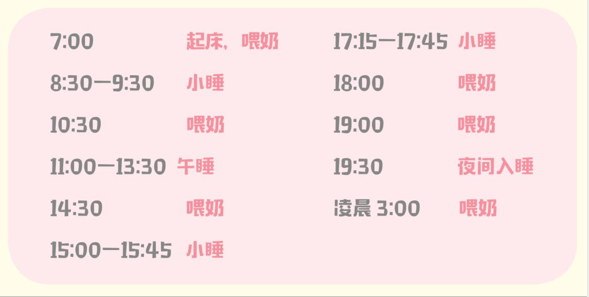
6. 疾病的护理
需要注意宝宝的常见病，以及如何照顾，可以避免非常多的问题！
宝宝生病不可怕，可怕的是不懂得如何科学的照顾，很多错误的做法会导致宝宝的病情加重、甚至出现危险。所以，需要提前了解一下，常见疾病和护理方式，必要时可以去医院就诊。
我们已经知道，新生儿黄疸是一种很常见的现象，大部分宝宝在出生后的第一周，都会遇上黄疸。正常情况，会在后续中逐渐消退。
- 黄疸
- 导致原因
- 新生儿黄疸主要是由宝宝体内胆红素水平升高引起的
- 新生儿宝宝的胆红素生成量是成人的
2~3倍，并且代谢能力较低 - 这样一来，产得多，排得少，宝宝体内的胆红素水平就超标了
- 生理性黄疸 -> 会自行消退
- 宝宝出生
2-3天出现，3-5天发黄加重，5-7天好转，14天后逐渐消退 - 早产儿的黄疸持续时间会长一点儿，一般持续
3~4周，甚至更久 - 母乳性黄疸分为母乳喂养不足，另一种是母乳中某些酶导致消退慢
- 宝宝出生
- 病理性黄疸 -> 需要医院治疗
- 蓝光照射
- 换血疗法
- 不推荐口服中成药、使用茵栀黄注射液、晒太阳、洗药浴等方法
- 护理建议 -> 观测胆红素水平
- 黄疸早期往往只出现头面部，胆红素大概
5~6mg/dL，可继续观察 - 黄疸开始波及躯干、四肢时，胆红素水为
10mg/dL，如果3天内就需要重视 - 最后宝宝的手心、脚心发黄，如果到这个程度，就需要尽快看医生
- 黄疸早期往往只出现头面部，胆红素大概
- 就医原则
- 黄疸在出生后
3天内提早出现，例如出生后24个小时内就出现 - 黄疸程度加深，手心、脚心都出现发黄的情况
- 黄疸消退时间晚（
2周以上），所以还是建议你带着宝宝看医生 - 虽然早产儿和母乳性黄疸也会迟迟不退，但考虑到如果是病理性的原因
- 黄疸在出生后
- 导致原因
在给宝宝换尿不湿的时候，你可能会发现，宝宝的屁股变得红红的，特别是在尿不湿包裹的皮肤区域。这个时候你就要警惕，宝宝是不是得尿布疹了。
- 尿布疹
- 导致原因
- 因为宝宝的肌肤娇嫩，皮脂腺也发育不完善，屏障功能比较弱
- 没有及时更换尿不湿，皮肤被尿液或便便一直刺激着
- 在摩擦下，很容易造成皮肤损伤，出现一块块红斑或者一粒粒小疹子
- 护理建议
- 对于轻度的“红屁股”，即便不用药物，科学护理就会自愈
- 不建议用爽身粉，可能会导致与尿液或汗水混合后还会阻塞毛孔
- 第一，及时更换尿不湿，保证宝宝屁股的干爽
- 第二，涂抹护臀霜，进一步保护宝宝的受损皮肤(以凡士林、氧化锌为主)
- 就医原则
- 宝宝轻度的 “红屁股” 症状通常在
3天内就会有明显好转 - 如果超过
3天且更加严重(有破皮渗水的倾向)，是不是有其他皮肤问题了 - 如果宝宝尤其是在更换尿不湿时，有烦躁、哭闹的情况，建议及时就医
- 宝宝轻度的 “红屁股” 症状通常在
- 导致原因
判断宝宝是否腹泻，主要是看宝宝大便的性状和次数是否突变。如果原本好好的大便突然变稀，宝宝排便次数变多，持续一周都没有好转；不满 6 个月的婴儿拉稀导致体重增长缓慢；“便便”黏糊糊的或带着脓血……很可能就是宝宝开始腹泻了。
- 腹泻
- 导致原因
- 病毒感染是自限性疾病，经过自然病程后，宝宝会自愈
- 乳糖不耐受导致，则需要及时调整
- 辅食添加不恰当导致，则需要及时调整
- 护理建议
- 护理宝宝腹泻的第一原则是预防或治疗脱水
- 精神状态萎靡或烦躁，建议优先补充口服补液盐 Ⅲ 溶液，间断补充保持尿
- 腹泻也是造成宝宝营养不良、阻碍宝宝生长发育的重要原因
- 如果宝宝已经因为腹泻出现了嗜睡昏迷的情况，那很有可能是重度脱水了
- 就医原则
- 精神状态很不好，常犯困
- 出现缺水的表现：大便量多，小便次数减少，眼窝凹陷，哭的时候眼泪减少等
- 出现轻度休克的表现：手脚发冷、皮肤发花等
- 有血便或腹痛的现象，且伴有剧烈呕吐或抽搐等严重症状
- 高烧不退
- 腹泻误区
- 误区一：给腹泻宝宝禁食或喝白粥
- 误区二：拉肚子就要吃抗生素
- 导致原因
宝宝出生后，宝宝的嘴里时不时地会出现一些白色的斑块。如果你用棉签稍稍擦拭，白色的斑块就消失了，那这十有八九就是奶渣了。可是有的时候，你怎么擦都擦不掉，一用力可能还擦出血，这时候你就要考虑宝宝是不是得鹅口疮了。
- 鹅口疮
- 导致原因
- 鹅口疮，又叫雪口病，是一种由真菌感染导致的疾病，常见于新生儿期
- 患病宝宝的舌面、两颊、上腭、唇内黏膜等处，会出现点状或片状的白色斑点
- 大部分宝宝的鹅口疮都非常轻微，并不会疼痛或不适，也不会影响进食
- 引起鹅口疮的白色念珠菌最大的特点就是不耐高温，用高温消毒就足够了
- 护理建议
- 外涂药物，霉菌素片碾成粉混合甘油或者食用油配置成溶液
- 饮食照常，做好奶具的清洁消毒（高温消毒）
- 就医原则
- 宝宝嘴里的白斑越来越多，口腔黏膜大部分或者全部被白斑覆盖
- 宝宝拒绝进食，反复哭闹，吞咽困难，皮肤和嘴唇发紫
- 伴随发热或是口角炎等并发症。
- 导致原因
夏天来临时，蚊虫们开始蠢蠢欲动。趁着父母不注意、打个盹的功夫，蚊子就能在宝宝胖乎乎的小手或小脚上叮起一个大包，痒得孩子白天发脾气，晚上睡不好。
- 蚊虫叮咬
- 导致原因
- 因为宝宝的新陈代谢快，体温比成年人高
- 宝宝夏天稍微一动弹就会满身汗，完美契合了蚊子的喜好
- 护理建议
- 驱蚊（将含有避蚊胺或埃卡瑞丁的驱蚊液涂在宝宝身上）
- 防蚊（蚊帐、纱窗、驱蚊液、电蚊香、穿长衣长裤）
- 止痒（先用温水轻擦后再用炉甘石洗剂来减缓瘙痒）
- 注意事项
- “植物驱蚊”不靠谱！
- 外涂的时候，注意要避开眼睛、耳朵、嘴巴和伤口附近
- 不足
2个月的宝宝，不建议外涂驱蚊液 - 使用含有埃卡瑞丁的产品时，成分浓度不要超过 20%
- 使用含有避蚊胺成分的驱蚊剂时，浓度不要超过 30%
- 炉甘石宝宝的皮肤破损处不要涂
- 不要使用含薄荷脑成分的炉甘石洗剂
- 就医原则
- 如果被叮咬后，宝宝的蚊子包面积很大，痒得厉害，可以咨询医生
- 导致原因
冬天到了，天干物燥，又到了娇嫩的宝宝们湿疹高发的季节了。没有任何一种药物能让湿疹不再反复，宝宝出现湿疹，重要的是做好“保湿护理”。
- 湿疹
- 导致原因
- 湿疹的产生是因为宝宝的皮肤干燥，湿疹皮肤最怕干和热
- 一是遗传，比如家族中有患哮喘、过敏性鼻炎、湿疹等过敏性疾病的人
- 二是过敏，小宝宝的自身免疫系统不成熟，自身皮肤屏障发育不够完善
- 护理建议
- 创造适宜的环境
- 室内湿度在
50%～ 60%、温度为22~25℃ - 要避免宝宝出汗，减少对湿疹的刺激，且不要室内抽烟
- 室内湿度在
- 选择合适的衣物
- 给宝宝穿薄厚适宜的纯棉衣物，减少衣服摩擦对皮肤的刺激
- 婴儿专用洗涤产品，增加清水漂洗次数，减少洗涤剂的残留
- 饮食营养均衡
- 不偏食，但避免海鲜、辛辣食物的刺激
- 采取合适的洗澡方式
- 用
36~38℃的温水(2-3日一次)且每次盆浴的时间控制在5~10分钟 - 洗完澡后用浴巾蘸干，切记不要擦干，拍干后立即给宝宝涂抹保湿霜
- 每天给宝宝涂抹
3~5次保湿霜，保持皮肤湿润
- 用
- 创造适宜的环境
- 注意事项
- 轻度湿疹表现为散发的小红斑或小红包，做好上述的基本日常护理通常就能自愈
- 中度以上的湿疹会出现红斑群集、渗液、化脓等严重症状，建议及时就医
- 就医原则
- 如果湿疹皮肤出现渗液、白色的脓包，甚至已经出现结痂，就说明宝宝已经感染了。这个时候应该尽快就医，针对感染进行治疗。
- 如果宝宝出疹子很厉害，并且你已经给宝宝做了仔细的护理，却始终没有好转，甚至有加重的情况，也需要及时就医。
- 导致原因
儿童是食物过敏高发人群，尤其是 2 岁以内的婴幼儿，很多父母在给宝宝添加辅食的时候，都会接触一个词组：“食物过敏”。
- 食物过敏
- 导致原因
- 宝宝免疫系统不成熟、食物成分太复杂引起的
- 护理建议
- 母乳喂养
- 添加辅食
- 给宝宝添加辅食，不要早于
4个月 - 多种辅食要分开添加，逐渐加量，试探性添加
- 给宝宝添加辅食，不要早于
- 把食物煮熟、煮透
- 在宝宝两周岁前，爸爸妈妈要写好食物日记
- 注意事项
- 奶、奶制品、蛋类、贝类、鱼类、大豆、花生、坚果和小麦都是常见的过敏食物
- 就医原则
- 一旦宝宝对某种食物过敏，必须立即停止喂养该种食物，然后及时就医
- 需要注意的是，不能单凭过敏原检查结果，自行断定宝宝的食物过敏情况
- 一般过敏原检查结果的阴性或者阳性仅供参考，需交由医生综合判断决定
- 导致原因
不知道你在给宝宝喂奶的时候，有没有发现，宝宝在吃奶之后，经常会莫名其妙地哼哼唧唧，面色胀红，哭闹不停。这个时候，宝宝可能是胃肠胀气了。
- 胃肠胀气
- 导致原因
- 胃肠胀气是由宝宝消化系统发育不成熟、吞咽空气过多等引起的
- 这一类胃肠胀气不需要药物治疗，想办法缓解宝宝不舒服的感觉就行
- 但有一些胃肠胀气是由消化系统疾病或者肠道过敏引起的，就需要就医
- 护理建议
- 正确冲泡奶粉
- 慢点儿喝奶多拍嗝
- 给宝宝做排气操
- 注意事项
- 大部分宝宝会在出生后
1个月左右出现，2个月后会缓解 1个月出现哭闹不安、蹬腿、面色胀红等，3个月后屁多、哭闹、要家长抱等- 胃肠胀气偶尔会导致肠绞痛，这是宝宝半夜无缘无故地大哭大闹的直接原因
- 大部分宝宝会在出生后
- 就医原则
- 一般情况下，胃肠胀气是宝宝生长发育过程中的正常现象，不用太担心。但如果宝宝一直哭闹不止，父母很难安抚宝宝的时候，就需要带宝宝上医院。
- 导致原因
冬天和春天气温较低，是感冒的高发季节。如果你发现宝宝有了感冒症状，同时伴有咳嗽，喘气时也呼哧呼哧的，那么宝宝很可能得了毛细支气管炎。一般而言，2 周后即可痊愈，但也有可能需要 3~4 周才能完全消退。
- 毛细支气管炎
- 导致原因
- 大多数是病毒感染导致的，是一种自愈性疾病
- 多勤通风、做好隔离、坚持母乳喂养、勤洗手、接种疫苗(`1/2 月)
- 护理建议
- 用生理盐水或生理性海水滴鼻剂或吸鼻器，清理鼻腔来缓解鼻塞症状
- 适当使用空气加湿器，使室内湿度保持在 40%～ 60%
- 保证宝宝喝足够的水，避免脱水
- 保证足够的能量供应，正常喂养或者少食多餐，避免宝宝呛奶
- 宝宝鼻塞、咳嗽明显时，竖抱、拍背也可以使他舒服一些
- 注意事项
- 患毛细支气管炎起初的症状跟感冒比较像，表现为鼻塞、流鼻涕、咳嗽、发烧等
- 但
2~3天后就会出现咳嗽加重、呼吸异常，表现出又浅又快、喘息憋气的症状 - 到第
3~5天时，症状最为严重，但病情高峰过后便会进入好转期，症状逐渐消退
- 就医原则
- 如果出现呼吸困难、吞咽困难、嘴唇和指甲发青、嘴唇发干、眼泪减少、小便量减少等脱水症状（
3个月以内的宝宝出现发热症状，其他月龄宝宝发热持续超过3天）就需要及时就医。
- 如果出现呼吸困难、吞咽困难、嘴唇和指甲发青、嘴唇发干、眼泪减少、小便量减少等脱水症状（
- 导致原因
宝宝一直哭闹，一边哭一边扭动身体，腿往肚子上蜷。可能你想尽各种办法去哄，但是宝宝始终哭个不停。宝宝如果出现这种情况，多数是因为肠绞痛。
- 肠绞痛
- 导致原因
- 肠绞痛不是病，而且很常见的问题
- 一般发生在
2周到4个月大的宝宝身上，目前还没有明确的病因和根治方法
- 护理建议
- 给宝宝洗个热水澡
- 喂奶是让宝宝恢复平静的最好方法
- 用小被子将宝宝轻轻地包裹起来，营造安全感
- 把宝宝放在婴儿车里推出去走一走或者换个家人照顾
- 给宝宝听白噪音，让宝宝情绪安稳下来
- 注意事项
- 进食不足或过度
- 腹部胀气
- 牛奶蛋白过敏
- 妈妈在怀孕期间或产褥期吸烟
- 妈妈焦虑和烦躁情绪的传染
- 就医原则
- 检查婴儿肠绞痛一般需要进行“排他性诊断”，也就是必须排除其他可能导致宝宝哭闹的疾病后，才能确诊为肠绞痛。所以，如果不确定宝宝为何哭闹，建议还是去医院就诊，让医生来判断。
- 导致原因
在你看着他茁壮成长的欣喜之余，幼儿急疹已经在悄悄地向他靠近了。大部分宝宝会在 2 岁前发病。幼儿急疹一年四季都可能发生，春、秋两季相对较多。
- 幼儿急疹
- 导致原因
- 幼儿急疹的发病原因是病毒感染
- 唾液是最主要的传播途径，也可能通过呼吸道分泌物、粪口等途径传染
- 护理建议
- 平时多休息，多补水
- 合理降温，遵医嘱根据体重服用退热药
- 无须涂抹皮疹药物，耐心等待
- 注意事项
- 幼儿急疹发病前没什么预兆，往往很突然
- 最开始的
1~5天表现为发热，退热后出现皮疹 1~2天后皮疹会消退，部分宝宝可能会持续3~4天- 退热后皮疹都会在短期内自然消退，代表着宝宝已经自愈
- 就医原则
- 幼儿急疹通常都不严重，宝爸宝妈可以先在家里观察。不过，一旦宝宝出现高烧不退、反复发作、热的同时伴随惊厥且时间超过
5分钟或反复发作就需要及时就医。
- 幼儿急疹通常都不严重，宝爸宝妈可以先在家里观察。不过，一旦宝宝出现高烧不退、反复发作、热的同时伴随惊厥且时间超过
- 导致原因
宝宝发高烧，通常都会把宝爸宝妈急得满头大汗，要是宝宝在发烧的过程中突然全身抽搐、口吐白沫，怕更是要把人吓个半死。俗话也叫“烧抽了”，通常发生在 6 个月到 5 岁的宝宝身上，主要表现就是高烧情况下的全身抽搐、瞪眼、身体僵直、口吐白沫等。发作时，孩子不会哭、不会回应外界的呼唤。
- 热性惊厥
- 导致原因
- 目前还没有发现任何一种退热药物可预防热性惊厥的发生
- 热性惊厥看起来十分吓人，但对宝宝的影响不大，很少会留下后遗症
- 护理建议
- 把宝宝放在平坦、柔软的地方，如地毯上、床上
- 让宝宝侧躺，头偏向一边，松开领口和衣服，确保宝宝呼吸通畅
- 如果宝宝嘴里有东西，要尽量轻柔地取出，不要强行掰开嘴
- 做好相关记录，记录惊厥开始的时间、持续时间、宝宝状态等（可录像）
- 脱衣服、开空调降温，采取恰当的物理降温方式
- 惊厥过后，尽快去医院就诊，以便确认发热原因
- 注意事项
- 不要掐宝宝的人中
- 不要限制宝宝活动
- 不要在宝宝嘴里塞东西
- 不要用酒精擦拭身体降温
- 就医原则
- 宝宝经常发生热性惊厥，有可能是热性惊厥附加症或者癫痫，建议你带宝宝去小儿神经内科做进一步的检查。建议，单次时间超过
5分钟或24个小时内发作超过一次时，宝爸宝妈应立即带宝宝就医。
- 宝宝经常发生热性惊厥，有可能是热性惊厥附加症或者癫痫，建议你带宝宝去小儿神经内科做进一步的检查。建议，单次时间超过
- 导致原因
每当季节交替，空气稍差，个别宝宝就开始咳嗽了。如果只是偶尔咳几声倒也不是什么问题，但如果宝宝不停地咳嗽，你就要注意，这是宝宝可能生病了的信号。
- 咳嗽
- 导致原因
- 咳嗽不一定都是细菌感染引起的
90%的感冒是病毒性感染，并没有特效治疗方法
- 护理建议
- 切忌乱用抗生
- 我们常见的消炎药，如头孢、青霉素（如阿莫西林）就是抗生素
- 不过抗生素不是消炎药，这类药物只对细菌、支原体等特定感染有效
- 用抗生素会让某些细菌的防御能力增强，以后再给宝宝吃药不见效
- 合理用药
- 90%的感冒是病毒性感染，并没有特效治疗方法
- 过度地打针与吃药只会让宝宝的抵抗力越来越差，对宝宝并没有好处
- 做好家庭护理
- 给宝宝提供舒适的环境，保持空气湿度或用生理盐水给宝宝做雾化等
6个月以上的宝宝要少量多次地喝温水，6个月以内的宝宝喝奶水或配方奶- 如果宝宝的鼻涕比较多，可以用生理盐水或生理性海水喷鼻或滴鼻
- 使用加湿器，增加空气湿度至
50%～60%为宜 - 对于
1岁以上的宝宝，还可以食用适量的蜂蜜（2~5ml）
- 切忌乱用抗生
- 注意事项
- 常用的成人非处方止咳药，用在宝宝身上有安全风险，是不建议给宝宝用的
- 美国儿科学会则认为，
2岁/6岁以内的孩子，都不应该使用
- 就医原则
- 咳嗽伴有发烧
- 宝宝呼吸频率加快
- 精神不好且有缺氧的表现
- 咳嗽频繁且超过一周不见好转，两周没有恢复
- 导致原因
在带娃的过程中，你免不了会遇到宝宝发热的情况，看到宝宝的小脸烧得红通通的，浑身滚烫，想必你是既心疼又紧张。发热可以说是每个宝宝都会经历的事情，那么宝宝发热应该怎么护理呢？
- 发热
- 导致原因
- 一般来说，急性发热都是病毒感染引起的而病毒感染大多是可以自愈的
- 自愈的这个过程一般是
3~5天左右，在使用抗生素有效的情况，3天内可退烧 - 布洛芬（
6个月以上宝宝可用）和对乙酰氨基酚（3个月以上宝宝可用）
- 护理建议
- 测宝宝的体温
- 给宝宝测体温，测量肛温仍然是最准确的方法
- 发热：肛温、耳温、额温、口温在
38℃及以上，腋温在37.2℃及以上 - 物理降温最好的方法是少穿衣服、少盖被子
- 根据宝宝的精神状态用药
- 腋温超过
38.5℃，或者没到38.5℃但有不舒服的情况就要考虑用药 - 但如果宝宝的精神状态好，即使体温超过了
38.5℃，也可以不着急吃药 - 如果是
3个月以内的宝宝，不论状态好坏，都不建议自行吃药，应该立即就医
- 腋温超过
- 根据宝宝的月龄用药
- 对于
3个月以内的宝宝来说，发热可能不仅是发热，还是严重感染的表现 - 所以，不足
3个月出现发热情况时，建议做一次全面的检查，不推荐直接用药 - 如果宝宝是
3~6个月大小，你可以选择对乙酰氨基酚 - 而对于
6个月以上的宝宝，则可以选择使用布洛芬或对乙酰氨基酚
- 对于
- 其他注意事项
- 保持清爽，补充水分，适当减衣
- 不要捂汗，不要用酒精擦拭，不推荐使用退热贴
- 测宝宝的体温
- 注意事项
- 捂汗不能退烧
- 发烧不会造成脑炎、肺炎
- 不要给孩子吃阿司匹林、安乃近等退烧药
- 就医原则
3个月以内的宝宝出现发热- 发热温度较高，通常腋温大于
38℃，同时精神状态不好 - 连续或反复发热超过
3天 - 孩子发热超过
3天，且发热的同时出现皮疹，惊厥等情况 - 孩子发热的同时出现拒绝饮水、尿量明显减少、嗜睡等脱水症状
- 孩子发热的同时出现严重的呼吸道症状，比如喘息或其他任何让你担心的症状
- 导致原因
一到降温、换季的时节，很多宝宝都被鼻涕和鼻塞困扰：鼻涕“呼哧呼哧”地往下流，爸爸妈妈恨不得走几步就给宝宝擦擦；鼻塞更遭罪，不仅吃不香，还睡不好。宝宝究竟怎么了？这是爸爸妈妈最焦虑的问题。
- 宝宝的鼻涕里也藏着大学问
白色水样鼻涕最常见于上呼吸道感染的早期，这个时候，不要想着尽快帮宝宝止住鼻涕，而是尽量让鼻涕流出来，这样就可以尽快把宝宝鼻腔里的病原冲走。
而黄绿色鼻涕通常是病毒、细菌导致的。一般而言，如果宝宝有黄绿色鼻涕，没有发热、头痛等不适，多半是病毒性感冒，继续观察就行，一般会自然痊愈。但如果伴有发热不退、恶心、头痛等症状，那宝宝很可能得了细菌感染导致的鼻窦炎。至于宝宝只有一侧鼻孔流鼻涕，流出的脓鼻涕，且伴有恶臭，那可能是有异物进入了宝宝的鼻腔。
除了上述原因，过敏性鼻炎也会让宝宝流鼻涕、鼻塞。过敏性鼻炎跟感冒很像，但是两者又很不一样。过敏性鼻炎一般在每年的固定时期或常年发作，鼻塞流涕的情况一般会持续超过两周，同时伴有眼睛发痒、鼻涕呈清水样、鼻痒、打喷嚏的症状，而且宝宝之前很有可能已经出现湿疹、反复咳嗽和食物过敏的情况。
而普通感冒多发生在气温寒冷或者气候变化比较大的时候，比如春天和冬天。感冒时，宝宝鼻塞流涕的情况一般会持续 7~10 天，可能伴有发热、咽痛、中度鼻痒、打喷嚏、全身不适等症状。鼻涕最初是白色的，后面可能会变成黄色。
- 比赛流涕
- 导致原因
- 因为宝宝
- 护理建议
- 宝宝没有不舒服就不用处理，宝宝的鼻涕流出来时，帮他擦干净就行了
- 如果鼻涕特别多，流个不停，可以使用海盐水喷鼻剂或者洗鼻器给宝宝清理
- 增加室内的空气湿度能湿化宝宝的呼吸道，有利于鼻涕稀释、流出
- 建议让宝宝喝足量的水，让他的呼吸道更舒服
- 注意事项
- 不要用感冒药
- 不要用手抠鼻子
- 不要用力擤鼻涕
- 就医原则
- 一般来说，宝宝的鼻塞流涕不用太过担心。但如果鼻塞流涕的症状持续时间太长，或者伴有发热、头疼或者鼻涕有异味的情况，你就应该及时带宝宝去耳鼻喉科就医。
- 导致原因
有的时候，你可能会发现宝宝发热，口腔、手上、脚上出现了红色的疹子和水疱，并且宝宝吃不好饭，甚至还会有咳嗽和流涕的症状。这很可能说明宝宝得了手足口病。典型的手足口病主要表现为手、足、口和肛周有皮疹，口腔黏膜出现疱疹，多发生于学龄前儿童身上，5 岁以内的宝宝发病率最高。
- 手足口病
- 导致原因
- 手足口病主要通过密切接触手足口病病人的粪便、体液和呼吸道分泌物（如打喷嚏的飞沫）、被污染的毛巾、被病毒污染的水源、玩具等物品而被传染。
- 因为手足口病可以通过消化道传播，所以如果宝宝的手接触了被手足口病病毒污染的食具、奶具，又不小心把手放到嘴里的话，宝宝就很容易感染手足口病。
- 护理建议
- 最有效的方法就是打肠道病毒
71型灭活疫苗 - 如果宝宝得的是轻度手足口病，一般
10天左右就可以自愈了 - 在这期间，你应该让宝宝好好待在家里休息，把宝宝暂时隔离起来，隔离期为
2周 - 患病期间，因口腔溃疡疼痛而烦躁哭闹，可以吃一些凉的和软的食物(牛奶、凉水)
- 最有效的方法就是打肠道病毒
- 注意事项
- 有些得了手足口病的宝宝在快睡着的时候，会反复出现全身性肌肉收缩动作(惊吓)
- 你就要警惕宝宝可能是感染了手足口中比较严重的类型，及时送宝宝就医
- 建议最好不要自行判断宝宝患病的轻重程度，而应该及时送宝宝就医
- 就医原则
- 持续高烧不退超过
48个小时 - 频繁呕吐、头痛
- 四肢抖动、肌阵挛或急性手脚无力
- 精神萎靡、嗜睡，白天过度睡眠，容易惊醒，烦躁不安
- 呼吸困难或呼吸增快、减慢或节律不正常
- 持续高烧不退超过
- 导致原因
每年到了换季的时候，流感就开始肆虐了。娇弱的小宝宝一不小心就中招了。与普通感冒相比，流感更容易引起发热，且发热的持续时间更长，病程一般是 5~10 天。症状也更严重，发热时体温可达 39~40℃。如果宝宝得了流感，就会精神萎靡、全身乏力，还可能伴有咳嗽、流涕、咽喉疼痛、腹泻呕吐等症状，发生中耳炎、肺炎、心肌炎等并发症的风险也很高。
- 流感
- 导致原因
- 接种流感疫苗
- 少去人多密集的区域
- 用流水勤洗手
- 护理建议
- 常规护理
- 勤洗手
- 房间做好通风
- 室内空气加湿
- 适当增加液体摄入
- 给宝宝做吃得顺口的东西，不强迫进食
- 特殊护理
- 隔离已经生病的宝宝
- 保证平时带宝宝的人不要换
- 常规护理
- 注意事项
- 奥司他韦：在出现症状的
48个小时内使用效果好，需要连续服用5天。这只对流感有效，一定要避免滥用。退烧药：对乙酰氨基酚（3月龄以上可用）或布洛芬（6月龄以上可用）。
- 奥司他韦：在出现症状的
- 就医原则
- 宝宝忽然发烧到腋温
39℃以上，精神状态不好。开始的一两天，宝宝可能只有高烧的症状，但一两天后咳嗽开始慢慢加重。怀疑是流感后，要尽快带宝宝去医院做流感病毒筛查，仔细向医生描述症状和最近接触的人。
- 宝宝忽然发烧到腋温
- 导致原因
炎炎夏日，是痱子的高发季节。很多白白胖胖的宝宝身上长满了痱子，宝宝因为瘙痒、灼痛而哭闹不安。看着宝宝那个难受劲儿，想必你心急如焚。
- 痱子
- 导致原因
- 宝宝的痱子是由出汗不畅引起的，皮肤表面的角质层在汗液的浸渍下容易堵塞毛孔
- 而宝宝代谢旺盛容易出汗，再加上汗腺功能尚未发育完全，汗液不能快速蒸发
- 护理建议
- 保持宝宝的皮肤干爽
- 开空调给宝宝降降温
- 经常用温水给宝宝洗澡
- 给宝宝穿棉质衣物
- 睡觉时多给宝宝翻身
- 外用药物
- 红痱和白痱可外涂炉甘石洗剂
- 对于
2岁以内的宝宝，建议不要使用添加薄荷脑成分的炉甘石洗剂 - 脓痱可以在医生的指导下，采用开申诉治疗，夫西地酸和莫匹罗星都是比较安全的
- 瘙痒较重时，考虑短期口服抗组胺药来止痒，比如西替利嗪、氟雷他定等
- 保持宝宝的皮肤干爽
- 注意事项
- 痱子主要分为三种：红痱、白痱和脓痱
- 红痱：最常见，是大小从针尖到小米粒不等、成片出现的小疙瘩，周围发红
- 白痱：是针尖至针头大小的白色透明水疱，水泡易破，不痒
- 脓痱：红痱加重后就会发展成脓痱，严重的会发展为败血症
- 就医原则
- 怀疑宝宝可能得了湿疹、尿布疹、夏季皮炎等其他疾病
- 有大片皮肤被抓破
- 儿童不建议使用十滴水和花露水
- 导致原因